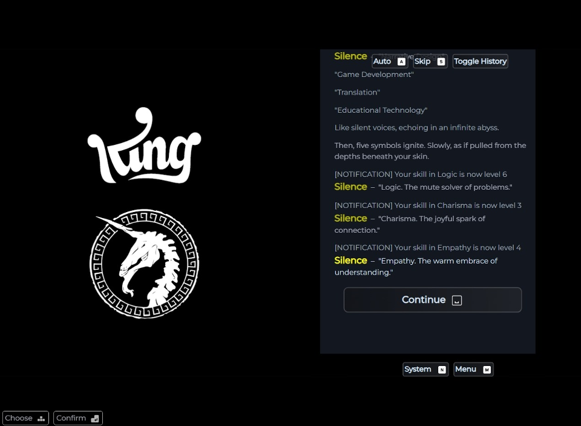
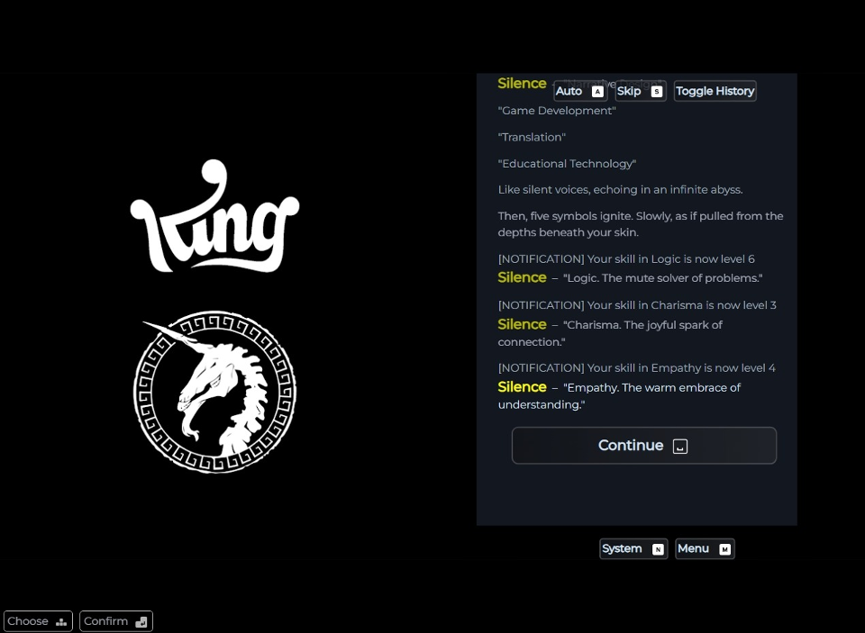

Final Fantasy-style Interactive CV WIP
A CV you can walk through — like a mini RPG map of my experience.
The Interview: A Playable Recruiter Experience WIP
You're the recruiter. Roll the dice, ask questions, see where it leads.
A collection of small narrative-driven projects created by Salvador Banderas Rovira as part of the THU & King Mentorship Program. Each one explores different ways to tell stories through play — sometimes weird, sometimes fun, always personal.
A CV you can walk through — like a mini RPG map of my experience.
You're the recruiter. Roll the dice, ask questions, see where it leads.